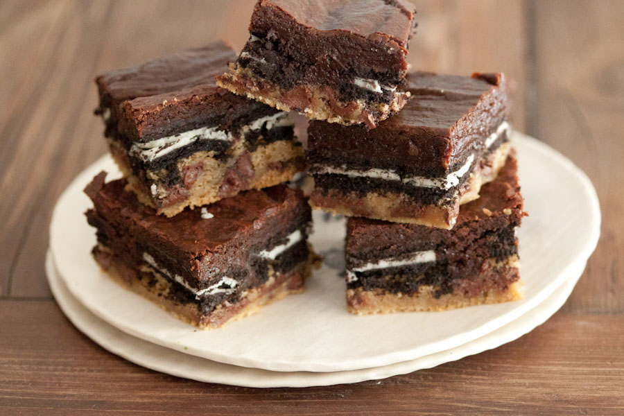
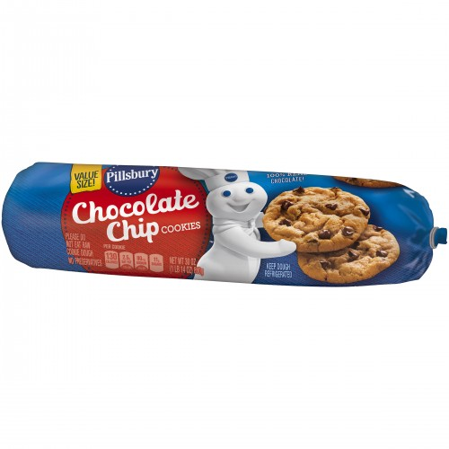
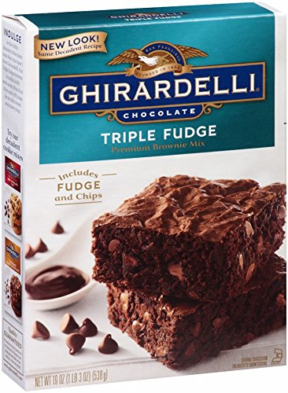
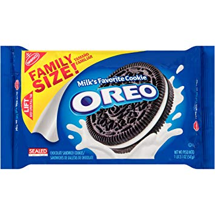
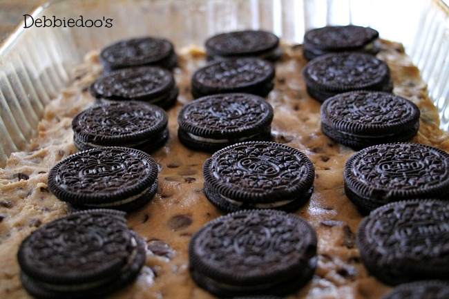
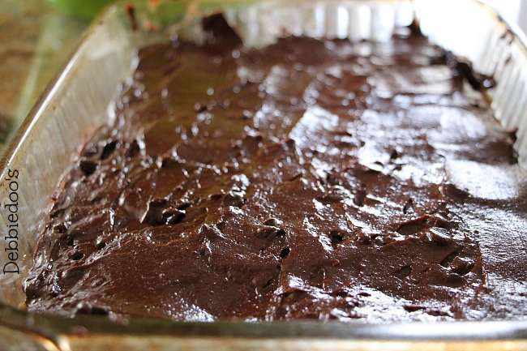
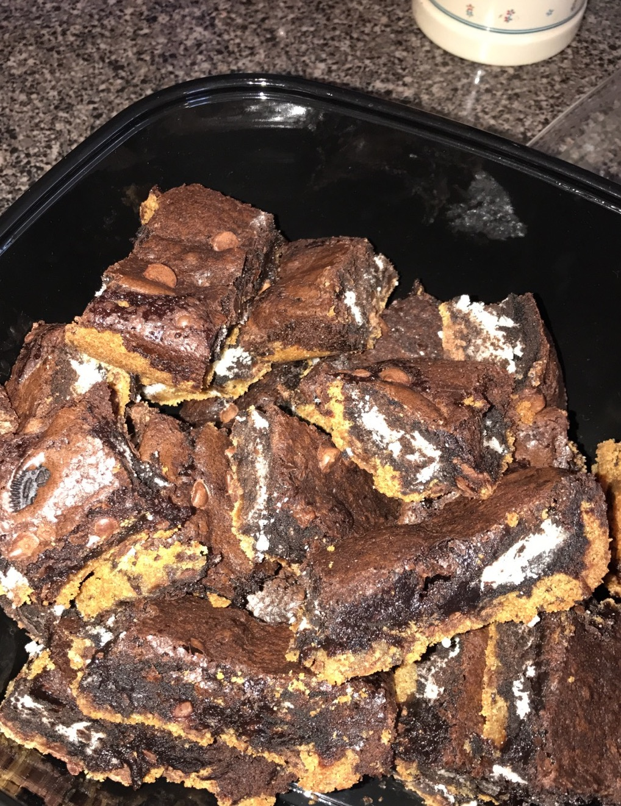
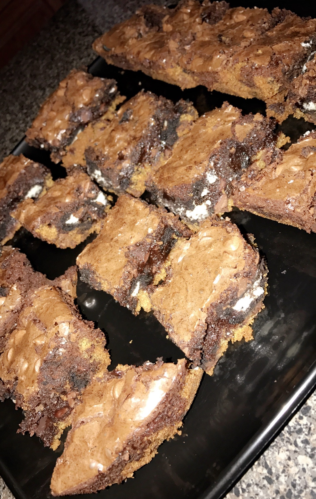

Hi everyone! Welcome to my tutorial on making the best desert around...Brookies! (also known as Slutty Brownies, but 'Brookies' is a much more appropriate name).
Brookies are an amazing combination of brownies, chocolate chip cookies, and Oreos.

(photo courtesy of Pinterest)
Placeholder for step and title



Before you begin baking, set aside the ingredients necessary for the Brookies. You will need:
a 9x9 pan (nonstick or glass)
Brownie mix (boxed mix or from scratch) * I highly recommend Ghiradelli's Triple Fudge Brownie Mix*
chocolate chip cookie dough
Oreo cookies
Pre-Heat the oven per the brownie batter instructions. If you are using batter from scratch, set the oven to 350 degrees farenheit.

(photo courtesy of Pinterest)
Prepare the 9x9 pan by covering it with foil or by spraying cooking spray.
Begin laying the cookie dough layer. Place the dough and flatten them out leaving no space. When you finish, it should just look like a huge piece of cookie dough.
Next, lay the Oreos. The number of cookies necessary will vary depending on the type of Oreos being used. Place them firmly into the cookie dough until you cannot fit anymore.
Now, pour the brownie batter on top. The Oreos should be completely covered.

(photo courtesy of Pinterest)
Now, it is time to bake the Brookies! If you are using a boxed brownie mix, simply follow the given directions on the box. If you are using batter made from scratch,bake for 30-40 minutes on 350 degrees Farenheit.

(Photo by Andriana Gibson)
Now that your highly anticipated dessert is finally done baking, check to make sure they are thoroughly finished by testing with a knife to ensure that they are done. Then, let the Brookies sit and cool for 1-2 hours before cutting and
serving.

(Photo by Andriana Gibson)
Sometimes people have questions regarding the preparation for these amazing desserts. Here I will list answers to some frequent questions.
Yes, they are *actually* called Slutty Brownies. I started calling them Brookies because I simply did not feel right using the word 'slutty' at family events.
ANY variation of Oreo cookies can be used for this recipe. They can be red velvet, double stuffed, store-brand...ANYTHING.
You can also use any kind of cookie dough. I liek to use the dough that comes in a roll, but any form works.
Any type of brownie batter works as well, but I will always recommend using Ghiradelli brownie mix, simply because I personaly think they take this dessert to the next level.